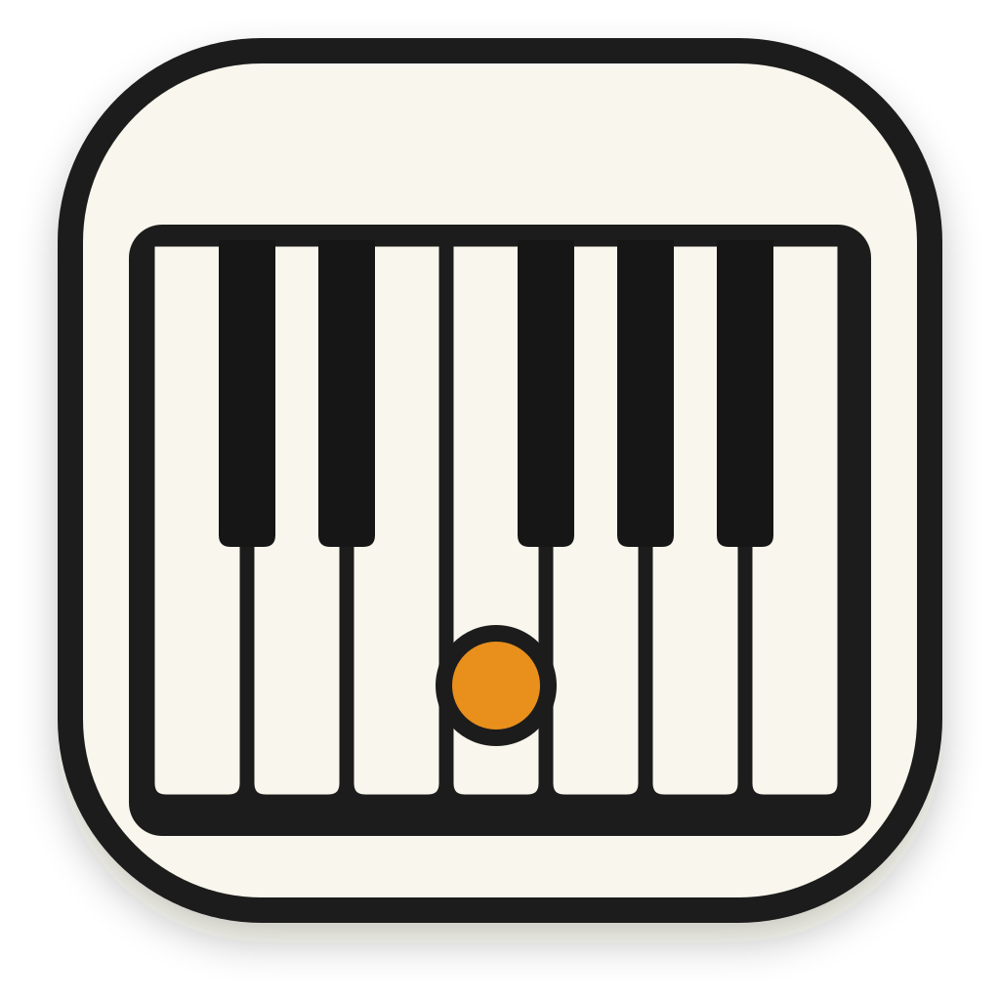
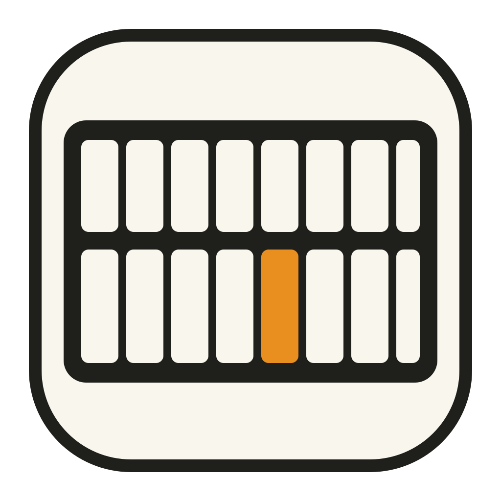
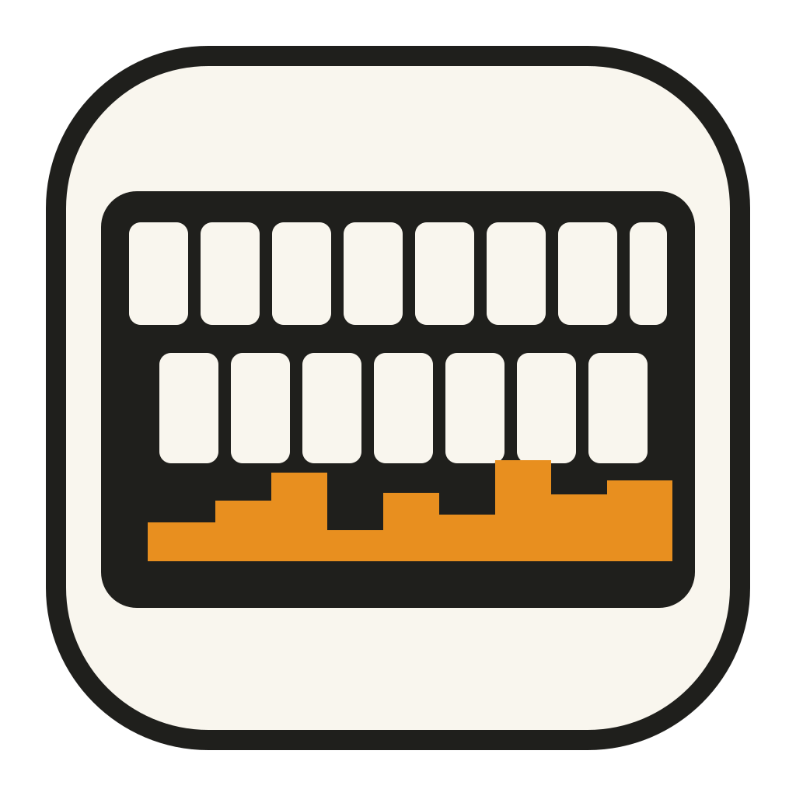

A / ADOPTED

Piano Octave
白鍵7本と黒鍵5本を、実際の2・3の並びで配置。音階を確認する主用途に最も近い案です。
音階を確かめるための実際のピアノ鍵盤を核にした案です。Aを配布ページとファビコンの採用案として組み込みました。

白鍵7本と黒鍵5本を、実際の2・3の並びで配置。音階を確認する主用途に最も近い案です。

均整の取れたキー面。黒鍵の実際の2・3の規則が読めないため、採用しません。

短いフレーズを残して聞き直す機能も示す案。主記号がやや増えるため、採用は見送りました。